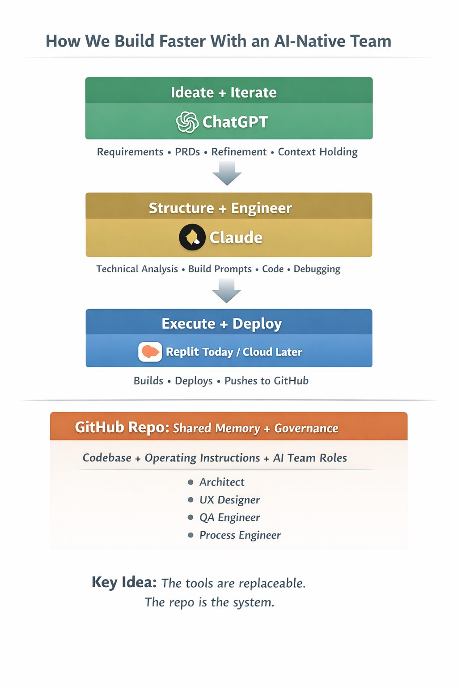

What is ForgeOS?
If you're building with ChatGPT, Claude, Replit, Cursor, or similar tools, you can move fast — but things break down:
- Requirements are unclear or incomplete
- Outputs vary between runs
- Context gets lost between tools
- Features don't ship cleanly
- You spend more time fixing than building
ForgeOS adds just enough structure to fix this. It's not a tool. It's a loop.
ForgeOS is: A workflow for shipping AI-built software — a way for a single builder to operate like a team.
The ForgeOS Loop
Every feature follows the same flow:
READY
Clarify what you're building. 2 minutes. If you can't fill it out, you're not ready.
PRD
Generate a buildable spec with ChatGPT. You review and own it.
BUILD
Generate and implement with Claude → Replit. Scoped and constrained.
DONE
Validate against your original intent. Compare to READY, not AI output.
LEARNING
Capture what actually happened. Turn output into insight.
Getting Started
ForgeOS is not an app you install — it's a set of templates and role files you adopt into your own project. Here's how to set it up and run your first feature.
Step 1 — Download ForgeOS
Clone the repo or download it as a ZIP from GitHub:
git clone https://github.com/lostinthewoods84/forgeOS.gitOr open it on GitHub and use Code → Download ZIP.
Step 2 — Copy it into your project
Navigate to your existing project and copy the ForgeOS files in. You only need three things to start:
# From inside your own project directory
cp -r /path/to/forgeOS/templates ./templates
cp -r /path/to/forgeOS/roles ./roles
mkdir -p promptsWhat each folder does:
templates/ — the Feature Card and Build Prompt templates you'll fill out per feature.
roles/ — AI persona definitions you paste into prompts to constrain AI behavior.
prompts/ — where your completed Feature Cards live (one file per feature).
Step 3 — Start your first Feature Card
Make a copy of the Feature Card template and name it after the feature you're building:
cp templates/FEATURE-CARD.md prompts/feature-[your-feature-name].mdOpen that file. This is the document you'll fill in as you work through the loop.
Step 4 — Fill out READY (2 min)
This is the only section you write yourself, before touching any AI tool. If you can't fill it out clearly, you're not ready to build yet.
## 1. READY
What:
Add a notification button to the header
Why:
Users need visibility into updates and system activity
Success:
- Bell icon in header
- Shows unread count
- Opens dropdown panel
Not doing:
- No backend persistence
- No email notifications
- No settings/preferencesStep 5 — Generate a PRD with ChatGPT (5 min)
Paste your READY section into ChatGPT with this prompt:
I want to build this feature:
[paste your READY section]
Generate a short PRD with:
- Requirements
- Behavior description
- Edge cases
- Acceptance criteria
Keep it concise. One page max.Paste the result into section 2 of your Feature Card. Then read it — cut anything the AI added that you didn't ask for.
Step 6 — Generate a Build Prompt with Claude (5 min)
Paste your PRD into Claude along with the Build Prompt template:
I need a build prompt for this feature.
Here's the PRD:
[paste PRD]
Create a build prompt using this template:
[paste contents of templates/build-prompts/TEMPLATE.md]Paste the result into section 3 of your Feature Card. Review the file scope and constraints — make sure nothing outside your intended changes is included.
Step 7 — Implement (5–15 min)
Give the Build Prompt to your execution tool — Replit, Claude Code, Cursor, or manual coding. The tool should implement exactly what the prompt specifies and nothing more. If it starts inventing features, the Build Prompt needs to be tighter.
Step 8 — DONE check (2 min)
Compare the result against what you wrote in READY — not what the AI produced. Fill in section 4:
## 4. DONE CHECK
Did we achieve the outcome? yes
What actually changed for the user:
Bell icon appears in header, shows badge count, opens panel on click
What's still broken / missing:
No empty state yet
Good enough to ship? yes (POC)Step 9 — Capture LEARNING (2 min)
After the feature ships, fill in section 5. This is the feedback loop that makes the next cycle better:
## 5. LEARNING
Expected:
Users will click the notification button to check updates
Observed:
Low engagement — few clicks in the first week
Delta:
Notifications may not be valuable enough yet
Decision:
Improve notification content before adding more featuresThat's one full cycle. Commit the Feature Card to your repo — it's a permanent record of what was built, why, and what happened. Then start the next READY.
As Complexity Grows
Add structure only when you feel friction, not in advance of it:
| Friction | What to Add | Purpose |
|---|---|---|
| AI contradicts previous decisions | docs/DECISIONS.md |
Log of decisions with rationale |
| Architecture drifts between sessions | docs/ARCH.md |
Service boundaries and dependencies |
| UI becomes inconsistent | docs/FLOWS.md |
Screen inventory and user journeys |
| AI takes liberties with implementation | Stricter Build Prompt constraints | Tighter execution scope |
| Same bugs reappear | roles/QA.md |
Test criteria and acceptance standards |
AI Roles
ForgeOS includes role definitions that constrain AI behavior at different stages. Include the relevant role file in your AI prompt:
ARCHITECT
When services start stepping on each other. Controls system design decisions.
UX
When user flows need consistency across screens and journeys.
QA
When you need repeatable test criteria and acceptance standards.
PROCESS
When workflow discipline starts slipping. Enforces the loop.
mkdir -p .forge/roles
cp roles/ARCHITECT.md .forge/roles/
cp roles/UX.md .forge/roles/
cp roles/QA.md .forge/roles/
cp roles/PROCESS.md .forge/roles/Core Constraints
Human decision-making is the bottleneck. AI can generate, transform, and execute — but it cannot be the final authority.
System Rules
- Do Not Overproduce — Only generate what can be reviewed. More artifacts = more waste.
- Limit Work in Progress — Prefer finishing over starting. WIP kills decision quality.
- AI Accelerates Execution, Not Authority — Every critical step requires human validation.
- Optimize for Learning, Not Output — Progress = validated assumptions + real-world feedback.
Operating Principles
- Pull, not push — Work is only created when the next stage is ready to receive it.
- Review is sacred — Protect time and space for thoughtful validation.
- Clarity over speed — Fast wrong decisions are more expensive than slow correct ones.
- Tight feedback loops — Every cycle should reduce uncertainty.
Anti-Patterns
- AI generating large volumes of unreviewed artifacts
- Multiple PRDs or features progressing without validation
- Skipping human review for the sake of speed
- Treating AI confidence as a substitute for human judgment
- Starting new features before capturing LEARNING from the last one
Architecture

Tool Stack
Ideation
ChatGPT or any LLM. Expand ideas into PRDs.
Structuring
Claude. Follows complex templates to generate precise build prompts.
Execution
Replit, Claude Code, or Cursor. Implements what the build prompt specifies.
Key Artifacts
- Feature Card — The primary unit of work. Tracks a feature end-to-end.
- PRD — Product Requirements Document. Buildable spec generated from READY.
- Build Prompt — Scoped, constrained instruction for the execution tool.
- Role Files — AI persona definitions to constrain behavior per stage.